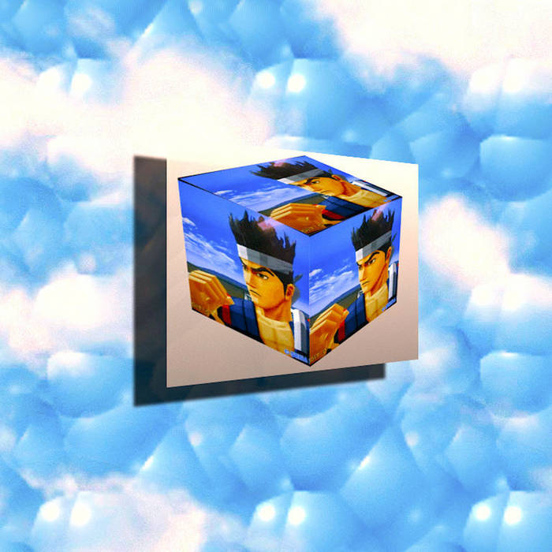
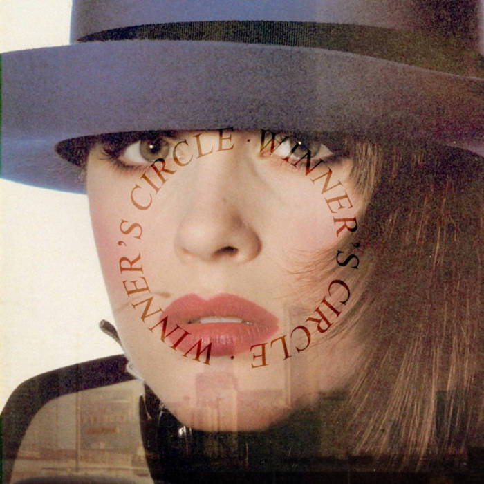
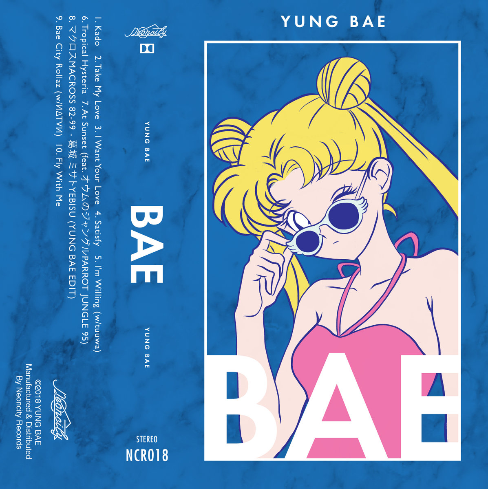

Vaporwave often incorporates imagery from the 80s and 90s, such as retro video games, VHS tapes, obsolete technology, and vintage advertisements. These nostalgic references evoke feelings of longing or nostalgia for a bygone era.
Vaporwave artists frequently remix and manipulate existing visuals, music, and other media to create new compositions. This may involve slowing down or distorting audio samples, altering color palettes, or repurposing corporate logos and branding.
Vaporwave artworks often feature surreal or dreamlike elements, blurring the line between reality and fantasy. This can include psychedelic visuals, glitch effects, and surreal landscapes.
| Images | Title | Artist | Link |
|---|---|---|---|
| リサフランク420 / 現代のコンピュー | Macintosh Plus | Bandcamp Link | |
|  | espirit.wav | ESPRIT 空想 | Bandcamp Link |
|  | Private Caller | SAINT PEPSI | Bandcamp Link |
|  | Bae City Rollaz (w/ИΔΤVИ) | YUNG BAE | Bandcamp Link |